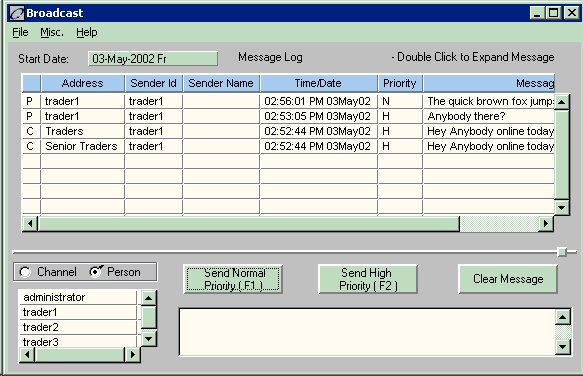

The Broadcast window provides users the ability to broadcast messages to authorized users currently logged onto the system. In addition, users may view messages sent specifically to them, or to any channel with which they are associated. These messages are archived to the database.
In addition, any message the user sends is also sent to him/her.
This feature is available via the microphone icon on the main control panel.
After the Broadcast icon is selected, the followingwindow displays.

This window contains the following menu items:
|
Menu |
Item |
Description |
|
File |
Print Screen |
Prints the current window. |
|
|
Exit |
Closes the current window. |
|
Misc |
Clear Log |
Removes the contents of the Message Log from the screen. This does not purge data from the database. The data is still there and will reappear the next time the user logs into the system. |
|
|
Displays the Configure View window. This allows the user to configure columns in the Message Log. |
|
|
|
Refresh Channels |
Updates the channels with recent changes made in the Admin Manager/Mail Administration module. |
|
Help |
Help |
Displays the system Help files. |
This window contains the following buttons:
|
Button |
Description |
|
Channel/Person |
Radio buttons used to determine if the broadcast message will be sent to a specific channel or person. |
|
Send Normal Priority (F1) |
If this button is used, the broadcast message is sent with normal priority. |
|
Send High Priority (F2) |
If this button is used, the broadcast message is sent with high priority. |
|
Clear Message |
If this button is used, the message list box is cleared and the message is not sent. |
The Broadcast window is composed of two sections, the Message Log and the Message Composition. The Message Log provides a view of the current and historical messages. The Message Composition area is where a message may be composed and sent. The following fields are found in the Broadcast window:
|
Field |
Description |
|
Start Date |
Enter the first date on which you want to see messages. |
|
(Untitled Left Column ) |
Indicates whether the message was sent to a individual person or to a channel. The available choices are: C = Channel P = Person |
|
Address |
Identifies the Channel or Person the message is sent to. |
|
Sender Id |
The sender’s ID number. |
|
Sender Name |
Identifies the sender of the message. |
|
Time/Date |
Identifies the date and time of the message. |
|
Priority |
Indicates the priority at which this message was sent: H = High N = Normal |
|
Message |
The text of the message. Because of space limitations, this field displays only the first few characters of a message in the column located in the upper panel of this window.. To display the message in its entirety, click on the row that contains the message to be read. The entire message will display in this field. Database Table.Column broadcast_log.message |
|
View All Channels |
The channels listing defaults to show only the channels that each user is a member of. You can view all channels by putting a check into this field. You still can’t see messages for channels for which you are not a member (you can see channel names, but not the message content. You can send messages to channels for which you are not a member only if you have the security privilege: Broadcast To All Channels (46005). |